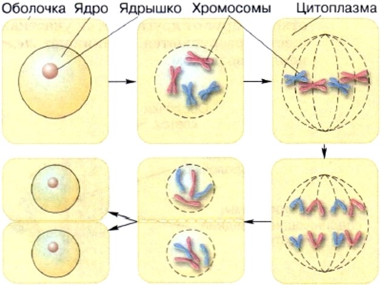

1. Устройство увеличительных приборов
Устройство лупы. Лупа — самый простой увеличительный прибор. Главная его часть — увеличительное стекло, выпуклое с двух сторон и вставленное в оправу. Лупы бывают ручные и штативные (рис. 1). Ручная лупа увеличивает предметы в 2—20 раз. При работе её берут за рукоятку и приближают к предмету на такое расстояние, при котором изображение предмета наиболее чётко. Штативная лупа увеличивает предметы в 10—25 раз. В её оправу вставлены два увеличительных стекла, укреплённых на подставке — штативе. К штативу прикреплён предметный столик с отверстием и зеркалом.
Устройство светового микроскопа. С помощью лупы можно рассмотреть форму клеток. Для изучения их строения пользуются микроскопом (от греческих слов «микрос» — малый и «скопео» — смотрю). Световой микроскоп (рис.2), с которым вы работаете в школе, может увеличивать изображение предметов до 3600 раз. В зрительную трубку, или тубус, этого микроскопа вставлены увеличительные стёкла (линзы). В верхнем конце тубуса находится окуляр (от латинского слова «окулус» — глаз), через который рассматривают различные объекты. Он состоит из оправы и двух увеличительных стёкол. На нижнем конце тубуса помещается объектив (от латинского слова «объектум» — предмет), состоящий из оправы и нескольких увеличительных стёкол. Тубус прикреплён к штативу. К штативу прикреплён также предметный столик, в центре которого имеется отверстие и под ним зеркало. Пользуясь световым микроскопом, можно видеть изображение объекта, освещенного с помощью этого зеркала.
Чтобы узнать, насколько увеличивается изображение при использовании микроскопа, надо умножить число, указанное на окуляре, на число, указанное на используемом объекте. Например, если окуляр даёт 10-кратное увеличение, а объектив — 20-кратное, то общее увеличение 10 х 20 = 200 раз.
2. Знакомство со строением клетки
Каждая клетка имеет плотную оболочку с порами, которые можно различить только при большом увеличении. В состав оболочек растительных клеток входит особое вещество — целлюлоза, придающая им прочность.
Каждая клетка имеет плотную оболочку с порами, которые можно различить только при большом увеличении. В состав оболочек растительных клеток входит особое вещество — целлюлоза, придающая им прочность
Под оболочкой клетки находится тоненькая плёночка — мембрана. Она легкопроницаема для одних веществ и непроницаема для других. Полупроницаемость мембраны сохраняется, пока жива клетка. Таким образом, оболочка сохраняет целостность клетки, придаёт ей форму, а мембрана регулирует поступление веществ из окружающей среды в клетку и из клетки в окружающую её среду. В цитоплазме находится небольшое плотное ядро, в котором можно различить ядрышко. С помощью электронного микроскопа было установлено, что ядро клетки имеет очень сложное строение. Это связано с тем, что ядро регулирует процессы жизнедеятельности клетки и содержит наследственную информацию об организме. Почти во всех клетках, особенно в старых, хорошо заметны полости — вакуоли (от латинского слова «вакуус» — пустой), ограниченные мембраной. Они заполнены клеточным соком — водой с растворёнными в ней саха-рами и другими органическими и неорганическими веществами.
В цитоплазме растительной клетки находятся многочисленные мелкие тельца — пластиды. При большом увеличении они хорошо видны. В клетках разных органов число пластид различно. У растений пластиды могут быть разных цветов: зелёные, жёлтые или оранжевые и бесцветные. В клетках кожицы чешуи лука, например, пластиды бесцветные. От цвета пластид и от красящих веществ, содержащихся в клеточном соке различных растений, зависит окраска тех или иных их частей. Так, зелёную окраску листьев определяют пластиды, называемые хлоропластами (от греческих слов «хлорос» — зеленоватый и «пластос» — вылепленный, созданный) (рис. 4). В хлоропластах находится зелёный пигмент хлорофилл (от греческих слов «хлорос» — зеленоватый и «филлон» — лист).
3. Химические элементы клетки
Все клетки живых организмов состоят из тех же химических элементов, что входят и в состав объектов неживой природы. Но распределение этих элементов в клетках крайне неравномерно. Так, около 98% от массы любой клетки приходится на четыре элемента: углерод, водород, кислород и азот. Относительное содержание этих химических элементов в живом веществе значительно выше, чем, например, в земной коре. Около 2% массы клетки приходится на следующие восемь элементов: калий, натрий, кальций, хлор, магний, железо, фосфор и серу. Остальные химические элементы (например, цинк, иод) содержатся в очень малых количествах. Неорганические вещества клетки — это вода и минеральные соли. Больше всего в клетке содержится воды (от 40 до 95% её общей массы). Вода придаёт клетке упругость, определяет её форму, участвует в обмене веществ.
4. Жизнедеятельность клетки, её деление и рост
Движение цитоплазмы способствует перемещению в клетках питательных веществ и воздуха. Чем активнее жизнедеятельность клетки, тем больше скорость движения цитоплазмы. Цитоплазма одной живой клетки обычно не изолирована от цитоплазмы других живых клеток, расположенных рядом. Нити цитоплазмы соединяют соседние клетки, проходя через поры в клеточных оболочках (рис. 5). Между оболочками соседних клеток находится особое межклеточное вещество. Если межклеточное вещество разрушается, клетки разъединяются. Так происходит при варке клубней картофеля. В спелых плодах арбузов и томатов, рассыпчатых яблоках клетки также легко разъединяются. Нередко живые растущие клетки всех органов растения меняют форму. Их оболочки округляются и местами отходят друг от друга. В этих участках межклеточное вещество разрушается. Возникают межклетники, заполненные воздухом.
Живые клетки дышат, питаются, растут и размножаются. Вещества, необходимые для жизнедеятельности клеток, поступают в них сквозь клеточную оболочку в виде растворов из других клеток и их межклетников. Растение получает эти вещества из воздуха и почвы. Как делится клетка. Клетки некоторых частей растений способны к делению, благодаря чему их число увеличивается. В результате деления и роста клеток растения растут. Делению клетки предшествует деление её ядра (рис. 6). Перед делением клетки ядро увеличивается, и в нём становятся хорошо заметны тельца, обычно цилиндрической формы — хромосомы (от греческих слов «хрома» — цвет и «сома» — тело). Они передают наследственные признаки от клетки к клетке.
В результате сложного процесса каждая хромосома как бы копирует себя. Образуются две одинаковые части. В ходе деления части хромосомы расходятся к разным полюсам клетки. В ядрах каждой из двух новых клеток их оказывается столько же, сколько было в материнской клетке. Всё содержимое также равномерно распределяется между двумя новыми клетками.
5. Ткани
Что такое ткань. Все органы растения имеют клеточное строение. Но не все клетки одинаковы. Например, клетки кожицы чешуи лука плотно прилегают друг к другу. Они имеют утолщённые оболочки. Эти клетки защищают растения от неблагоприятных условий внешней среды. Клетки, находящиеся внутри стебля, имеют вид длинных трубочек, по ним передвигаются питательные вещества. Совокупность клеток и межклеточного вещества, имеющих общее происхождение, строение и выполняющих определённые функции, называют тканью. Виды тканей. Выделяют несколько видов растительных тканей: покровные, основные, механические, проводящие и образовательные
Покровные ткани выполняют защитную функцию. Они образованы живыми или мёртвыми клетками с плотно сомкнутыми, утолщёнными оболочками. Эти ткани находятся на поверхности корней, стеблей, листьев. Покровную ткань, состоящую из живых клеток, называют кожицей. Она имеет вид тонкой прозрачной плёнки, покрывающей органы растения. Со временем на некоторых органах растений вместо кожицы образуется пробка. Клетки пробки мёртвые, полые, имеют утолщённые оболочки. Они надёжно защищают органы растения от неблагоприятных условий жизни. Механические ткани придают прочность растениям. Они образованы группами клеток с утолщёнными оболочками. У некоторых клеток оболочки одревесневают. Часто клетки механической ткани удлинённые и имеют вид волокон. Проводящие ткани образованы живыми или мёртвыми клетками, которые имеют вид трубок. По ним передвигаются растворённые в воде питательные вещества.
Сосуды — последовательно соединённые мёртвые полые клетки, поперечные перегородки между которыми исчезают. Ситовидные трубки — удлинённые безъядерные живые клетки, последовательно соединённые между собой. В их поперечных стенках есть достаточно крупные отверстия. Основные ткани занимают пространство между покровными, механическими и проводящими тканями. Они состоят из живых клеток. Различают несколько видов этих тканей в зависимости от того, какую функцию выполняют их клетки. Основная их функция — синтез и запасание различных веществ. Клетки образовательных тканей имеют небольшие размеры, тонкую оболочку и относительно крупное ядро. Они делятся, образуя новые клетки, из которых формируются другие ткани.